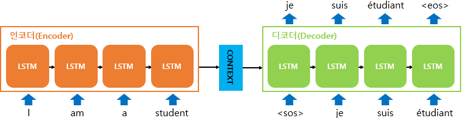

from IPython.display import ImageSeq2Seq 모델을 활용한 챗봇 생성
Seq2Seq 모델의 개요
Image('https://wikidocs.net/images/page/24996/%EC%9D%B8%EC%BD%94%EB%8D%94%EB%94%94%EC%BD%94%EB%8D%94%EB%AA%A8%EB%8D%B8.PNG')
데이터셋에 필요한 라이브러리를 다운로드 받습니다.
Korpora는 한글 자연어처리 데이터)셋입니다.
설치 명령어
# !pip install Korpora- 이 중 챗봇용 데이터셋인
KoreanChatbotKorpus를 다운로드 받습니다. KoreanChatbotKorpus데이터셋을 활용하여 챗봇 모델을 학습합니다.- text, pair로 구성되어 있습니다.
- 질의는 text, 답변은 pair입니다.
from Korpora import KoreanChatbotKorpus
corpus = KoreanChatbotKorpus()
Korpora 는 다른 분들이 연구 목적으로 공유해주신 말뭉치들을
손쉽게 다운로드, 사용할 수 있는 기능만을 제공합니다.
말뭉치들을 공유해 주신 분들에게 감사드리며, 각 말뭉치 별 설명과 라이센스를 공유 드립니다.
해당 말뭉치에 대해 자세히 알고 싶으신 분은 아래의 description 을 참고,
해당 말뭉치를 연구/상용의 목적으로 이용하실 때에는 아래의 라이센스를 참고해 주시기 바랍니다.
# Description
Author : songys@github
Repository : https://github.com/songys/Chatbot_data
References :
Chatbot_data_for_Korean v1.0
1. 챗봇 트레이닝용 문답 페어 11,876개
2. 일상다반사 0, 이별(부정) 1, 사랑(긍정) 2로 레이블링
자세한 내용은 위의 repository를 참고하세요.
# License
CC0 1.0 Universal (CC0 1.0) Public Domain Dedication
Details in https://creativecommons.org/publicdomain/zero/1.0/
예시 텍스트를 보면 구어체로 구성되어 있습니다.
corpus.get_all_texts()[:10]['12시 땡!',
'1지망 학교 떨어졌어',
'3박4일 놀러가고 싶다',
'3박4일 정도 놀러가고 싶다',
'PPL 심하네',
'SD카드 망가졌어',
'SD카드 안돼',
'SNS 맞팔 왜 안하지ㅠㅠ',
'SNS 시간낭비인 거 아는데 매일 하는 중',
'SNS 시간낭비인데 자꾸 보게됨']get_all_pairs()는 text와 pair가 쌍으로 이루어져 있습니다.
corpus.get_all_pairs()[0].text'12시 땡!'corpus.get_all_pairs()[0].pair'하루가 또 가네요.'데이터 전처리
question과 answer를 분리합니다.
question은 질의로 활용될 데이터셋, answer는 답변으로 활용될 데이터 셋입니다.
texts = []
pairs = []
for sentence in corpus.get_all_pairs():
texts.append(sentence.text)
pairs.append(sentence.pair)list(zip(texts, pairs))[:5][('12시 땡!', '하루가 또 가네요.'),
('1지망 학교 떨어졌어', '위로해 드립니다.'),
('3박4일 놀러가고 싶다', '여행은 언제나 좋죠.'),
('3박4일 정도 놀러가고 싶다', '여행은 언제나 좋죠.'),
('PPL 심하네', '눈살이 찌푸려지죠.')]특수문자는 제거합니다.
한글과 숫자를 제외한 특수문자를 제거하도록 합니다.
[참고] 튜토리얼에서는 특수문자와 영문자를 제거하나, 실제 프로젝트에 적용해보기 위해서는 신중히 결정해야합니다.
챗봇 대화에서 영어도 많이 사용되고, 특수문자도 굉장히 많이 사용됩니다. 따라서, 선택적으로 제거할 특수기호나 영문자를 정의한 후에 전처리를 진행하야합니다.
# re 모듈은 regex expression을 적용하기 위하여 활용합니다.
import redef clean_sentence(sentence):
# 한글, 숫자를 제외한 모든 문자는 제거합니다.
sentence = re.sub(r'[^0-9ㄱ-ㅎㅏ-ㅣ가-힣 ]',r'', sentence)
return sentence적용한 예시
한글, 숫자 이외의 모든 문자를 전부 제거됨을 확인할 수 있습니다.
clean_sentence('12시 땡^^!??')'12시 땡'clean_sentence('abcef가나다^^$%@12시 땡^^!??')'가나다12시 땡'한글 형태소 분석기 (Konlpy)
형태소 분석기를 활용하여 문장을 분리합니다.
가방에 들어가신다 -> 가방/NNG + 에/JKM + 들어가/VV + 시/EPH + ㄴ다/EFN
- 형태소 분석 이란 형태소를 비롯하여, 어근, 접두사/접미사, 품사(POS, part-of-speech) 등 다양한 언어적 속성의 구조를 파악하는 것입니다.
- konlpy 형태소 분석기를 활용하여 한글 문장에 대한 토큰화처리를 보다 효율적으로 처리합니다.
설치
# !pip install konlpykonlpy 내부에는 Kkma, Okt, Twitter 등등의 형태소 분석기가 존재하지만, 이번 튜토리얼에서는 Okt를 활용하도록 하겠습니다.
from konlpy.tag import Oktokt = Okt()# 형태소 변환에 활용하는 함수
# morphs 함수 안에 변환한 한글 문장을 입력 합니다.
def process_morph(sentence):
return ' '.join(okt.morphs(sentence))Seq2Seq 모델이 학습하기 위한 데이터셋을 구성할 때, 다음과 같이 3가지 데이터셋을 구성합니다.
question: encoder input 데이터셋 (질의 전체)answer_input: decoder input 데이터셋 (답변의 시작). START 토큰을 문장 처음에 추가 합니다.answer_output: decoder output 데이터셋 (답변의 끝). END 토큰을 문장 마지막에 추가 합니다.
def clean_and_morph(sentence, is_question=True):
# 한글 문장 전처리
sentence = clean_sentence(sentence)
# 형태소 변환
sentence = process_morph(sentence)
# Question 인 경우, Answer인 경우를 분기하여 처리합니다.
if is_question:
return sentence
else:
# START 토큰은 decoder input에 END 토큰은 decoder output에 추가합니다.
return ('<START> ' + sentence, sentence + ' <END>')def preprocess(texts, pairs):
questions = []
answer_in = []
answer_out = []
# 질의에 대한 전처리
for text in texts:
# 전처리와 morph 수행
question = clean_and_morph(text, is_question=True)
questions.append(question)
# 답변에 대한 전처리
for pair in pairs:
# 전처리와 morph 수행
in_, out_ = clean_and_morph(pair, is_question=False)
answer_in.append(in_)
answer_out.append(out_)
return questions, answer_in, answer_outquestions, answer_in, answer_out = preprocess(texts, pairs)questions[:5]['12시 땡', '1 지망 학교 떨어졌어', '3 박 4일 놀러 가고 싶다', '3 박 4일 정도 놀러 가고 싶다', '심하네']answer_in[:5]['<START> 하루 가 또 가네요',
'<START> 위로 해 드립니다',
'<START> 여행 은 언제나 좋죠',
'<START> 여행 은 언제나 좋죠',
'<START> 눈살 이 찌푸려지죠']answer_out[:5]['하루 가 또 가네요 <END>',
'위로 해 드립니다 <END>',
'여행 은 언제나 좋죠 <END>',
'여행 은 언제나 좋죠 <END>',
'눈살 이 찌푸려지죠 <END>']all_sentences = questions + answer_in + answer_outa = (' '.join(questions) + ' '.join(answer_in) + ' '.join(answer_out)).split()
len(set(a))12638토큰화
import numpy as np
import warnings
import tensorflow as tf
from tensorflow.keras.preprocessing.text import Tokenizer
from tensorflow.keras.preprocessing.sequence import pad_sequences
# WARNING 무시
warnings.filterwarnings('ignore')토큰의 정의
tokenizer = Tokenizer(filters='', lower=False, oov_token='<OOV>')Tokenizer로 문장에 대한 Word-Index Vocabulary(단어 사전)을 만듭니다.
tokenizer.fit_on_texts(all_sentences)단어 사전 10개 출력
for word, idx in tokenizer.word_index.items():
print(f'{word}\t\t => \t{idx}')
if idx > 10:
break<OOV> => 1
<START> => 2
<END> => 3
이 => 4
을 => 5
거 => 6
가 => 7
예요 => 8
사람 => 9
요 => 10
에 => 11토큰의 갯수 확인
len(tokenizer.word_index)12637치환: 텍스트를 시퀀스로 인코딩 (texts_to_sequences)
question_sequence = tokenizer.texts_to_sequences(questions)
answer_in_sequence = tokenizer.texts_to_sequences(answer_in)
answer_out_sequence = tokenizer.texts_to_sequences(answer_out)문장의 길이 맞추기 (pad_sequences)
MAX_LENGTH = 30question_padded = pad_sequences(question_sequence, maxlen=MAX_LENGTH, truncating='post', padding='post')
answer_in_padded = pad_sequences(answer_in_sequence, maxlen=MAX_LENGTH, truncating='post', padding='post')
answer_out_padded = pad_sequences(answer_out_sequence, maxlen=MAX_LENGTH, truncating='post', padding='post')question_padded.shape(11823, 30)answer_in_padded.shape, answer_out_padded.shape((11823, 30), (11823, 30))모델
from tensorflow.keras.layers import Input, Embedding, LSTM, Dense, Dropout, Attention
from tensorflow.keras.models import Model
from tensorflow.keras.callbacks import TensorBoard, ModelCheckpoint
from tensorflow.keras.utils import plot_model학습용 인코더 (Encoder)
class Encoder(tf.keras.Model):
def __init__(self, units, vocab_size, embedding_dim, time_steps):
super(Encoder, self).__init__()
self.embedding = Embedding(vocab_size, embedding_dim, input_length=time_steps, name='Embedding')
self.dropout = Dropout(0.2, name='Dropout')
# (attention) return_sequences=True 추가
self.lstm = LSTM(units, return_state=True, return_sequences=True, name='LSTM')
def call(self, inputs):
x = self.embedding(inputs)
x = self.dropout(x)
x, hidden_state, cell_state = self.lstm(x)
# (attention) x return 추가
return x, [hidden_state, cell_state]학습용 디코더 (Decoder)
Attention Layer
Inputs are query tensor of shape [batch_size, Tq, dim], value tensor of shape [batch_size, Tv, dim] and key tensor of shape [batch_size, Tv, dim].
The calculation follows the steps:
- Calculate scores with shape [batch_size, Tq, Tv] as a query-key dot product: scores = tf.matmul(query, key, transpose_b=True).
- Use scores to calculate a distribution with shape [batch_size, Tq, Tv]: distribution = tf.nn.softmax(scores).
- Use distribution to create a linear combination of value with shape [batch_size, Tq, dim]: return tf.matmul(distribution, value).
class Decoder(tf.keras.Model):
def __init__(self, units, vocab_size, embedding_dim, time_steps):
super(Decoder, self).__init__()
self.embedding = Embedding(vocab_size, embedding_dim, input_length=time_steps, name='Embedding')
self.dropout = Dropout(0.2, name='Dropout')
self.lstm = LSTM(units,
return_state=True,
return_sequences=True,
name='LSTM'
)
self.attention = Attention(name='Attention')
self.dense = Dense(vocab_size, activation='softmax', name='Dense')
def call(self, inputs, initial_state):
# (attention) encoder_inputs 추가
encoder_inputs, decoder_inputs = inputs
x = self.embedding(decoder_inputs)
x = self.dropout(x)
x, hidden_state, cell_state = self.lstm(x, initial_state=initial_state)
# (attention) key_value, attention_matrix 추가
# 이전 hidden_state의 값을 concat으로 만들어 vector를 생성합니다.
key_value = tf.concat([initial_state[0][:, tf.newaxis, :], x[:, :-1, :]], axis=1)
# 이전 hidden_state의 값을 concat으로 만든 vector와 encoder에서 나온 출력 값들로 attention을 구합니다.
attention_matrix = self.attention([key_value, encoder_inputs])
# 위에서 구한 attention_matrix와 decoder의 출력 값을 concat 합니다.
x = tf.concat([x, attention_matrix], axis=-1)
x = self.dense(x)
return x, hidden_state, cell_state코드 세부설명
STEP 1) 인코더의 최종 hidden_state 값을 디코더 attention key의 첫 번째 state로 활용
initial_state[0]: (batch_size, 128)[initial_state[0][:, tf.newaxis, :]: (batch_size, 1, 128)
STEP 2) 디코더의 이전 time_step의 hidden_state 값과 concat
x[:, :-1, :]: (batch_size, 29, 128)
병합 후 - tf.concat([initial_state[0][:, tf.newaxis, :], x[:, :-1, :]], axis=1): (batch_size, 30, 128)
STEP 3) 1번 단계와 2번 단계에서 병합된 Key 값과 Encoder의 LSTM 전체 output value로 attention 계산
attention_matrix = self.attention([key_value, encoder_inputs])
STEP 4)최종 결과 도출 (concat)
tf.concat([x, attention_matrix], axis=-1)
디코더의 LSTM 전체 output과 attention 값을 concat 하여 Dense로 넘깁니다.
모델 결합
class Seq2Seq(tf.keras.Model):
def __init__(self, units, vocab_size, embedding_dim, time_steps, start_token, end_token):
super(Seq2Seq, self).__init__()
self.start_token = start_token
self.end_token = end_token
self.time_steps = time_steps
self.encoder = Encoder(units, vocab_size, embedding_dim, time_steps)
self.decoder = Decoder(units, vocab_size, embedding_dim, time_steps)
def call(self, inputs, training=True):
if training:
encoder_inputs, decoder_inputs = inputs
# (attention) encoder 출력 값 수정
encoder_outputs, context_vector = self.encoder(encoder_inputs)
# (attention) decoder 입력 값 수정
decoder_outputs, _, _ = self.decoder((encoder_outputs, decoder_inputs), initial_state=context_vector)
return decoder_outputs
else:
x = inputs
# (attention) encoder 출력 값 수정
encoder_outputs, context_vector = self.encoder(x)
target_seq = tf.constant([[self.start_token]], dtype=tf.float32)
results = tf.TensorArray(tf.int32, self.time_steps)
for i in tf.range(self.time_steps):
decoder_output, decoder_hidden, decoder_cell = self.decoder((encoder_outputs, target_seq), initial_state=context_vector)
decoder_output = tf.cast(tf.argmax(decoder_output, axis=-1), dtype=tf.int32)
decoder_output = tf.reshape(decoder_output, shape=(1, 1))
results = results.write(i, decoder_output)
if decoder_output == self.end_token:
break
target_seq = decoder_output
context_vector = [decoder_hidden, decoder_cell]
return tf.reshape(results.stack(), shape=(1, self.time_steps))단어별 원핫인코딩 적용
단어별 원핫인코딩을 적용하는 이유는 decoder의 output(출력)을 원핫인코딩 vector로 변환하기 위함
VOCAB_SIZE = len(tokenizer.word_index)+1def convert_to_one_hot(padded):
# 원핫인코딩 초기화
one_hot_vector = np.zeros((len(answer_out_padded), MAX_LENGTH, VOCAB_SIZE))
# 디코더 목표를 원핫인코딩으로 변환
# 학습시 입력은 인덱스이지만, 출력은 원핫인코딩 형식임
for i, sequence in enumerate(answer_out_padded):
for j, index in enumerate(sequence):
one_hot_vector[i, j, index] = 1
return one_hot_vectoranswer_in_one_hot = convert_to_one_hot(answer_in_padded)
answer_out_one_hot = convert_to_one_hot(answer_out_padded)answer_in_one_hot[0].shape, answer_in_one_hot[0].shape((30, 12638), (30, 12638))변환된 index를 다시 단어로 변환
def convert_index_to_text(indexs, end_token):
sentence = ''
# 모든 문장에 대해서 반복
for index in indexs:
if index == end_token:
# 끝 단어이므로 예측 중비
break;
# 사전에 존재하는 단어의 경우 단어 추가
if index > 0 and tokenizer.index_word[index] is not None:
sentence += tokenizer.index_word[index]
else:
# 사전에 없는 인덱스면 빈 문자열 추가
sentence += ''
# 빈칸 추가
sentence += ' '
return sentence학습 (Training)
하이퍼 파라미터 정의
BUFFER_SIZE = 1000
BATCH_SIZE = 64
EMBEDDING_DIM = 100
TIME_STEPS = MAX_LENGTH
START_TOKEN = tokenizer.word_index['<START>']
END_TOKEN = tokenizer.word_index['<END>']
UNITS = 128
VOCAB_SIZE = len(tokenizer.word_index)+1
DATA_LENGTH = len(questions)
SAMPLE_SIZE = 3
NUM_EPOCHS = 20체크포인트 생성
checkpoint_path = 'model/seq2seq-chatbot-attention-checkpoint.ckpt'
checkpoint = ModelCheckpoint(filepath=checkpoint_path,
save_weights_only=True,
save_best_only=True,
monitor='loss',
verbose=1
)분산 환경 적용
strategy = tf.distribute.MirroredStrategy()
FLAG = True
if strategy.num_replicas_in_sync > 1 and FLAG:
MULTIPLE_BATCH = strategy.num_replicas_in_sync
print(f'분산환경 사용 >> GPU: {MULTIPLE_BATCH}')
else:
print(f'분산환경 미사용')
MULTIPLE_BATCH = 1INFO:tensorflow:Using MirroredStrategy with devices ('/job:localhost/replica:0/task:0/device:GPU:0', '/job:localhost/replica:0/task:0/device:GPU:1')
분산환경 사용 >> GPU: 2모델 생성 & compile
# 분산 환경 적용시
if MULTIPLE_BATCH > 1:
print(f'분산환경 사용 >> GPU: {MULTIPLE_BATCH}')
with strategy.scope():
seq2seq = Seq2Seq(UNITS, VOCAB_SIZE, EMBEDDING_DIM, TIME_STEPS, START_TOKEN, END_TOKEN)
seq2seq.compile(optimizer='adam', loss='categorical_crossentropy', metrics=['acc'])
else:
print(f'분산환경 미사용')
seq2seq = Seq2Seq(UNITS, VOCAB_SIZE, EMBEDDING_DIM, TIME_STEPS, START_TOKEN, END_TOKEN)
seq2seq.compile(optimizer='adam', loss='categorical_crossentropy', metrics=['acc'])분산환경 사용 >> GPU: 2# 연속하여 학습시 체크포인트를 로드하여 이어서 학습합니다.
seq2seq.load_weights(checkpoint_path)<tensorflow.python.training.tracking.util.CheckpointLoadStatus at 0x7f56fc590518>def make_prediction(model, question_inputs):
results = model(inputs=question_inputs, training=False)
# 변환된 인덱스를 문장으로 변환
results = np.asarray(results).reshape(-1)
return resultsfor epoch in range(NUM_EPOCHS):
print(f'processing epoch: {epoch * 10 + 1}...')
seq2seq.fit([question_padded, answer_in_padded],
answer_out_one_hot,
epochs=10,
batch_size=BATCH_SIZE*MULTIPLE_BATCH,
callbacks=[checkpoint]
)
# 랜덤한 샘플 번호 추출
samples = np.random.randint(DATA_LENGTH, size=SAMPLE_SIZE)
# 예측 성능 테스트
for idx in samples:
question_inputs = question_padded[idx]
# 문장 예측
results = make_prediction(seq2seq, np.expand_dims(question_inputs, 0))
# 변환된 인덱스를 문장으로 변환
results = convert_index_to_text(results, END_TOKEN)
print(f'Q: {questions[idx]}')
print(f'A: {results}\n')
print()processing epoch: 1...예측
# 자연어 (질문 입력) 대한 전처리 함수
def make_question(sentence):
sentence = clean_and_morph(sentence)
question_sequence = tokenizer.texts_to_sequences([sentence])
question_padded = pad_sequences(question_sequence, maxlen=MAX_LENGTH, truncating='post', padding='post')
return question_paddedmake_question('오늘 날씨가 정말 화창합니다')array([[ 76, 534, 7, 110, 1, 0, 0, 0, 0, 0, 0, 0, 0,
0, 0, 0, 0, 0, 0, 0, 0, 0, 0, 0, 0, 0,
0, 0, 0, 0]], dtype=int32)make_question('찐찐찐찐찐이야~ 완전 찐이야~')array([[ 1, 1, 1, 1, 1, 870, 1, 0, 0, 0, 0, 0, 0,
0, 0, 0, 0, 0, 0, 0, 0, 0, 0, 0, 0, 0,
0, 0, 0, 0]], dtype=int32)def run_chatbot(question):
question_inputs = make_question(question)
results = make_prediction(seq2seq, question_inputs)
results = convert_index_to_text(results, END_TOKEN)
return results유저로부터 Text 입력 값을 받아 답변 출력
while True:
user_input = input('<< 말을 걸어 보세요!\n')
if user_input == 'q':
break
print('>> 챗봇 응답: {}'.format(run_chatbot(user_input)))<< 말을 걸어 보세요!
커피 마시고 싶다
>> 챗봇 응답: 카페인 이 필요한 시간 인가 봐요
<< 말을 걸어 보세요!
운동하고 싶다
>> 챗봇 응답: 저 도 타고 싶어요
<< 말을 걸어 보세요!
다이어트 하고 싶다
>> 챗봇 응답: 기초 대 사량 을 높 여보세요
<< 말을 걸어 보세요!
q